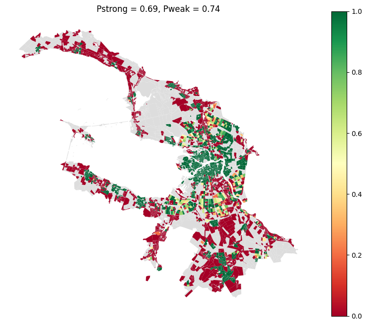

Competitive provision
This type of provision is used for service types such as school, kindergarten etc. Where each demand occupies some space and doesn’t let any other demand occupy it.
[1]:
import pandas as pd
blocks_gdf = pd.read_pickle('./../../data/saint_petersburg/blocks.pickle')
accessibility_matrix = pd.read_pickle('./../../data/saint_petersburg/accessibility_matrix_intermodal.pickle')
Provision assessment
[3]:
from blocksnet.config import service_types_config
service_type = 'school'
_, demand, accessibility = service_types_config[service_type].values()
demand, accessibility
[3]:
(120, 15)
In most cases max_depth=1 is optimal, but for this example max_depth=3 will be used
[14]:
from blocksnet.analysis.provision import competitive_provision
gdf = blocks_gdf.rename(columns={f'capacity_{service_type}':'capacity'})
blocks_df, links_df = competitive_provision(gdf, accessibility_matrix, accessibility, demand, max_depth=3)
2025-09-19 18:36:22.555 | INFO | blocksnet.analysis.provision.competivive.core:_initialize_provision_df:29 - Initializing provision DataFrame
2025-09-19 18:36:22.559 | WARNING | blocksnet.analysis.provision.competivive.core:_initialize_provision_df:33 - No demand in columns. Imputing using population column and demand parameter
2025-09-19 18:36:22.586 | INFO | blocksnet.analysis.provision.competivive.core:_supply_self:56 - Supplying blocks with own capacities
2025-09-19 18:36:22.700 | INFO | blocksnet.analysis.provision.competivive.core:competitive_provision:175 - Setting and solving LP problems until max depth or break condition reached
100%|██████████| 3/3 [00:17<00:00, 5.80s/it]
2025-09-19 18:36:40.117 | SUCCESS | blocksnet.analysis.provision.competivive.core:competitive_provision:188 - Provision assessment finished
[15]:
blocks_df.head()
[15]:
| demand | capacity | demand_left | demand_within | demand_without | capacity_left | capacity_within | capacity_without | provision_strong | provision_weak | |
|---|---|---|---|---|---|---|---|---|---|---|
| 0 | 0 | 0 | 0 | 0 | 0 | 0 | 0 | 0 | NaN | NaN |
| 1 | 0 | 0 | 0 | 0 | 0 | 0 | 0 | 0 | NaN | NaN |
| 2 | 13 | 0 | 13 | 0 | 0 | 0 | 0 | 0 | 0.0 | 0.0 |
| 3 | 9 | 0 | 9 | 0 | 0 | 0 | 0 | 0 | 0.0 | 0.0 |
| 4 | 52 | 942 | 0 | 52 | 0 | 0 | 734 | 156 | 1.0 | 1.0 |
[16]:
links_df.head()
[16]:
| value | ||
|---|---|---|
| source | target | |
| 10 | 710 | 12.0 |
| 15 | 8838 | 1.0 |
| 35 | 115 | 35.0 |
| 39 | 4544 | 43.0 |
| 41 | 262 | 86.0 |
Additional features
[18]:
from blocksnet.analysis.provision import provision_strong_total, provision_weak_total
p_strong = provision_strong_total(blocks_df)
p_weak = provision_weak_total(blocks_df)
float(p_strong), float(p_weak)
[18]:
(0.6890279622706392, 0.7433122288715732)
Visualization
[21]:
ax=blocks_gdf.plot(color='#ddd', figsize=(10,8))
blocks_gdf[['geometry']].join(blocks_df).plot(ax=ax, column='provision_strong', cmap='RdYlGn', vmin=0, vmax=1, legend=True)
ax.set_title(f'Pstrong = {round(p_strong, 2)}, Pweak = {round(p_weak, 2)}')
ax.set_axis_off()
